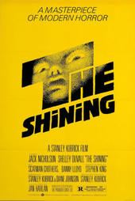

By Orla McCarney
Introduction
Saul Bass, born in 1920, was one of the most iconic and influential visual communicators of the 20th century and possibly of all time. He was behind some of the most iconic corporate logos such as; Kleenex AT&T and Bell.
These designs look as modern now as they did in the 1960-1980s.
Bass grew up in New York City to Jewish immigrants. He had a creative mindset from childhood during his college years he attended night classes at Art Students League where he studied under György Kepes. This is where he learned the importance of the functional Bauhaus aesthetic.(Arms,2020)During this time he was heavily influenced by ‘the New Swiss Style’ and his eastern European teachers. He learned that a good design goes beyond conforming to society which at the time was steered towards soviet propaganda.
Graphic Design in Film
Bass moved from New York to California in the 1940s.During this time, he worked mostly for advertising until his first major break when, in 1954, he was asked to design a poster for the film 'Carmen Jones'. His poster was so highly acclaimed he was asked to do design the title credits as well.
Bass was recognised for having a sophistication in his movie poster design, this was due to his use of minimalism and he completely changed the role of title sequences within the film industry.
Before Bass, titles were projected onto the curtains before the movie began. Saul Bass saw this as very basic and static and was determined to create life and motion in these graphics, making them part of the experience for the audience along with the movie itself.
This caused him to create his signature “Kinetic Type” which involved letters moving across the screen and incorporated images as well as text.
This created an uproar in the film and design world. Bass became revolutionary, he showed everyone what was possible with film and the new and fun things that can come from that art form. With his first title sequence he inspired a new generation of not only designers but filmmakers and musicians.
“The Golden Arm woke everybody up” -Kyle Cooper
“I remember sneaking into the cinema to watch it… and spent the following weeks sketching out his own versions” – Martin Scorsese
“We all aspired to that beautiful simplification. Then came Anatomy of a Murder. After that he was God.”- Charlie Watts (drummer from Rolling Stones, who started his career as a graphic designer.esquire.com
After the success of ‘The Man with the Golden Arm’ Saul Bass was in high demand and started offering to client’s package deals involving main and credit titles, trademark, posters, TV ads and more. However, Bass’s work became so influential directors and filmmakers themselves attempted their own title sequences instead, creating a “fade out” (esquire.com) for Saul Bass’s work. Although at this point Bass had made a name for himself and that wasn’t going to fade out any time soon.
Bass's Role in Logo Design
Some of Saul Bass’s designs (Kose Cosmetics, designed in 1959 and Warner Communications, designed in 1972.) are still so relevant that they have not been updated by new designers
The Logo he designed for United Airlines in1973 is one of his most recognisable. Pentagram, a new design team working with United in 1996 said “We were given an open brief when we began working with United, but we made one decision shortly after we began: we elected to retain the remarkable logo created for them in 1973 by Saul Bass."csmonitor/SaulBass
Other iconic logos of Saul Bass have been updated since such as; AT&T, Quaker and Dixie, some of these logo updates were not well received within the design community who indicated that they were more dated than Bass’s originals.

Bass’s influence cannot be understated as he created identities for around 80 major corporations in his time along with his ground-breaking work with film title sequences and posters. The fact that many of these logos and identities took years to redesign, if redesigned at all, perfectly represents how both influential and ahead of his time Saul Bass was. Even some of his earliest designs from the 60s look as modern or in some cases more modern than the redesigns. The ‘Dixie’ design in particular looks far more dated even though designed in late 2000s than Saul Bass’s late 60s version.
Bass's Influence in Poster Designs
Saul Bass was once quoted as saying
‘Design is thinking made visual’What I have learned form this is that a good poster or logo design should make the user understand the film or company intuitively as the “thinking” is done for them by the design.
Saul Bass was also incredibly influential in the poster design in the film world. It was usual at the time for film posters to include the two main actors faces with not many other design elements. Designers like Saul Bass looked at this as lacklustre and not making the most out of a design.
According to the book ‘Saul Bass: A Life in Film and Design’-co-authored by Bass’s daughter and Pat Kirkham, Saul’s creative process is. made apparent through many drafts and he describes his posters working on 2 levels. They “sell” the film while also creating a standalone piece of art. This explains Bass’s reluctance to use actors or any purely persuasive or promotional text faces in any of his designs. This revolutionary action at the time allowed his work to be appreciated even today- itsnicethat.com
We can see Saul Bass’s quote in action in his most influential designs. Such as;
This poster and the subsequent title sequence is one of my favourite designs of Bass’s I enjoy the colours used and the contrast between the light orange background and text with the solid black outline of a body

This title sequence was the beginning of Saul Bass’s title sequence design career. Within this sequence, white lines of different lengths flow across screen around credits. This has been replicated in many ways since and became one of the cornerstones of 50s/60s movie design.

This poster for the famous Alfred Hitchcock movie, I think is incredible. The fun spiral design along with the duplicate outline of the man emphasises the feeling of vertigo in the viewer. It gives a subtle insight to what the movie will be about, and the minimal colour choice helps these elements stand out.The wilder ununiform font also ties into the theme of vertgio and loss of control

The Shining poster Is a later design of Bass’s but is still fully recognisable as one of his works. Then bright yellow background really demands the viewers attention. This poster is incredibly minimal and contains mostly the title and film credits. However, within the ‘T’ is an unsettling image of a doll-like face which adds an element of eeriness to an otherwise fairly neutral poster. Associating the film with a normal surface layer with an intrusive scary layer underneath.
Saul Bass's Legacy in Film and Graphic Design
In these modern times, it may have been hard for Saul Bass to really inspire and influence people since his death, however, his latest work for Martin Scorsese’s films allowed a new, younger generation of artists to discover his work and incredible influence on design. Steven Spielberg’s ‘Catch me if you can’ has paid homage to the style of Bass’s title sequence of ‘Around the World in Eighty Days’ to continue to keep Bass’s style alive.
Saul Bass’s work has been permanently displayed in the Museum of Modern Art and Smithsonian, emphasising how strong his legacy is. His designs and creations will be available for generations to see and be inspired from.
Along with this, Kyle Cooper, a modern graphic designer. Kyle, instead of continuing Bass’s legacy with direct nods to his work, was more influenced by Bass’s work ethic and approach. He takes lessons he’s learned from the life and work of Saul Bass to create his own original ideas such as the title sequence he created for the movie ‘Seven’ which Bass would have been proud of.
Saul Bass died when he was 77, 2 years after his final project with Martin Scorsese. It was a title sequence for the film ‘Casino’ and it was considered some of his best work.